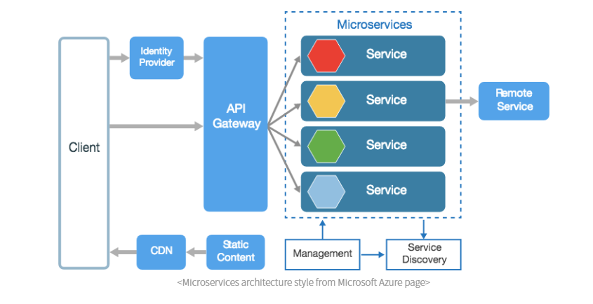
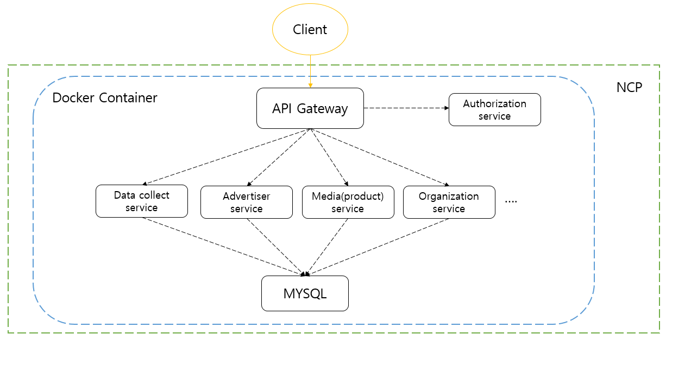

Microservice Architecture + Docker

마이크로서비스는 전통적인 모놀리틱(monolithic)방식과는 다르게 각각의 핵심 기능을 세분화하여 서비스 단위로 제공합니다.
사용자의 요청은 API Gateway를 통하여 서비스에게 전달 되며 서비스간의 호출도 API Gateway를 통하여 진행됩니다.
서비스들은 서로 독립적으로 배포 가능하며, 서로간의 의존성은 최소화 합니다.
또한, 각 서비스들은 서로간의 통신을 정의된 API(REST..)를 사용해 진행합니다.
출처:https://brunch.co.kr/@sangjinkang/11
이번 프로젝트는 MSA를 사용할 만큼 큰 프로젝트도, 복잡성을 가진 프로젝트도 아닙니다. 하지만 신기술에 대한 도입을 목적으로 MSA로 전향하였습니다. 추후 개발이 완료 된다면 MSA장점을 살려 확장성을 가지고 운영할 수 있기 때문에 고려 후 진행하게 되었습니다.
